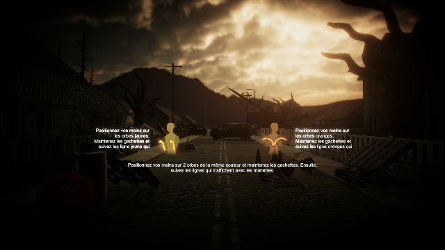
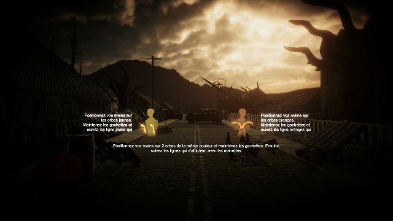

HIVE is a virtual reality audio fiction where the user plays a scientist in a post-apocalyptic world, that has to save bees from going extinct in order to prevent the wildlife and the flora to die. In this game, the player has to make choices that impact the story and save an artificial bee that was created by the scientist. This project was created during a 2 year long workshop in a team of 8 in the first year, and 11 in the second.
I was in charge of coding and integration of my colleagues' work. I coded the game in C# with Unity.
HIVE est une fiction sonore en réalité virtuelle où l'utilisateur incarne le rôle d'un scientifique dans un monde post-apocalyptique, qui doit empêcher l'extinction totale des abeilles afin de sauver la faune et la flore. Dans ce jeu, le joueur doit faire des choix qui impactent l'histoire et qui permettront de sauver une abeille artificielle créée par le scientifique. Ce projet à été créé pendant un workshop de 2 ans, par une équipe de 8 pendant la première année et de 11 pendant la seconde.
J'étais chargé de la programmation et de l'intégration du travail de mes collègues. J'ai codé le jeu en C# sur Unity.
The point of HIVE is to keep the player immersed into the experience and the story. The leads of the project didn't want the player to click on menus to make choices. They wanted the player to make gestures that look like the action the character they are playing is going to take.
Design du Gameplay
Le but de HIVE est de garder le joueur immergé dans l'expérience et dans l'histoire. Les chefs du projet ne voulaient pas que le joueur ait à cliquer sur des menus pour faire des choix. Ils voulaient que le joueur fasse des gestes qui ressemblent aux actions que le personnage qu'il incarne s'apprête à faire.
Unity Tools
In order to create the gestures that players had to take, I created a small tool to help me make the gestures faster. When I launched the game in the editor in a "gesture creation" mode, I could record the movements of the controllers when I pressed the triggers. Then, through code, it creates a custom class containing an array of points and other data that gets stored in a list. This list is then used to verify if the player has done a similar gesture to validate a specific choice.
I also made a tool that facilitates the integration of the story elements. This tool is made up of a script that reads and parses a narrative document, written in a specific way, in order to find all of the dialogue and all the available choices. The script then puts every piece of dialogue and choice in their respective order, making up the story elements inside the game as they were in the document. This way, the narrative designers could change up the story and add onto it whenever they needed.
Tools Unity
Afin de créer les gestes que le joueur doit faire, j'ai créé un outil (tool) unity qui m'aiderait à créer les gestes plus vite. Lorsque je lançais le jeu dans l'éditeur en mode "création de gestes", je pouvais enregistrer les mouvements des manettes quand j'appuyais sur les gachettes. Ensuite, par le code, l'outil crée une classe personnalisée contenant un tableau de points et d'autres données qui va s'ajouter à une liste. Cette dernière est alors utilisée pour vérifier si le joueur a fait le bon geste pour valider le choix souhaité.
J'ai également fait un outil permettant d'intégrer plus aisément les éléments narratifs. Il se compose d'un script qui décortique un document narratif écrit d'une certaine manière, afin de trouver tous les dialogues et tous les choix possibles de l'histoire. Le script arrange par la suite tous les dialogues et tous les choix dans le bon ordre, reconstruisant ainsi les éléments narratifs dans l'odre qu'ils avaient été écrits. De cette façon, ceux chargés de la narration pouvaient changer l'intrigue et également y ajouter ce dont ils avaient besoin.
 
